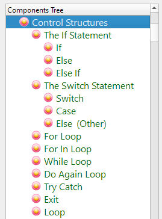
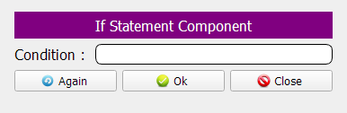
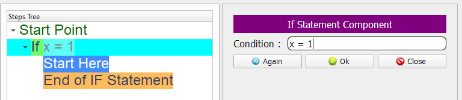
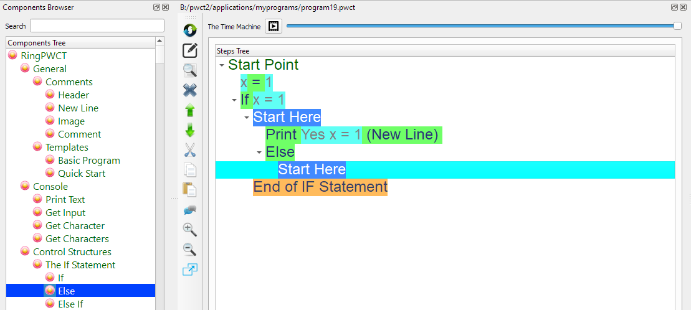
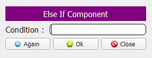
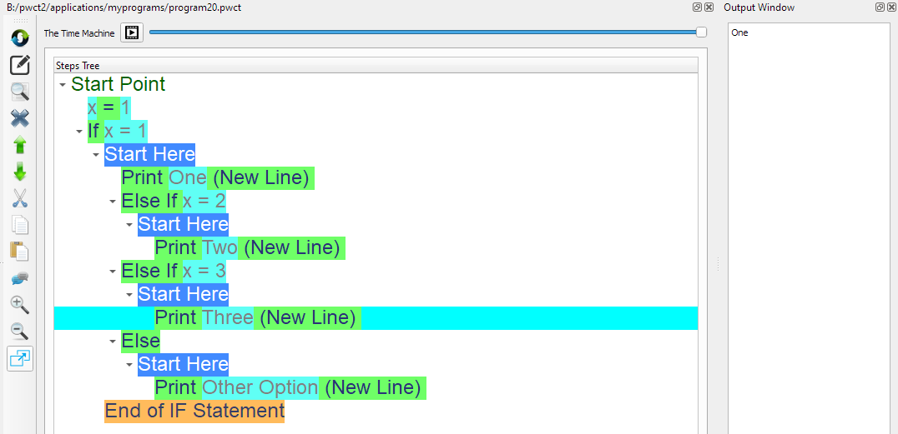

Control Structures Components¶
In this chapter we are going to learn about the Control Structures Components
Introduction¶
These components could be used to take decisions and separate the execution to different branches where one of these brances will be executed based on the evaluation result of specific conditions
Also it can be used to repeat the execution of specific commands
We have many components in this category:
If Statement
Else
Else If
Switch
Case
Else (Other)
For Loop
For In Loop
While Loop
Do Again Loop
Try Catch
Exit Command
Loop Command
If Statement¶
In the Interaction Page we can determine the Condition
For example, if the condition is (x=1) the next steps will be generated in the Steps Tree
Sure, This is not a complete program, and will lead to runtime error because the x variable is not defined!
Else¶
Using (Else) We can determine what to do if the (If Statement & Else If Statements) conditions are not True
Example:

Else If¶
Using many (Else If) statements, we can evaluate different conditions
In the Interaction Page we can determine the condition
In the next example, We have the X variable and we use (If Statement) and (Else if) statements to determine what to do based on the variable value
